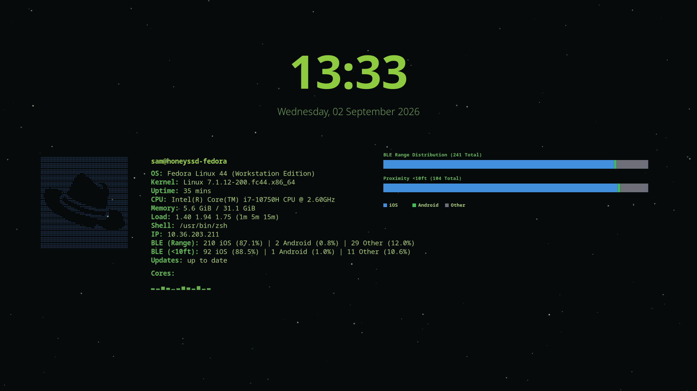

Project: Screesave
Custom Screesaver for Wayland
Mission Brief
Simple, make a cool screensaver that isn't just a boring black screen. It's been cited by the creator of xScreensaver that Wayland does not work for his application anymore (xScreensaver). So, I took it upon myself to make a cool screensaver for my Fedora machine in the Wayland (Gnome) environment.
You may ask, "Why not just use Cinnamon? xScreensaver works there?"
Fantastic question with a fairly simple answer: it crashes when it sleeps because the drivers will never work with my Nvidia card. It's me finding a solution to a traditional Linux™ problem.
Tech Stack
Visual Telemetry
Main View

Screensaver, running. Shows cores, BLE devices, and a chart showcasing what is in the BLE (bluetooth) range.
Interestingly enough, a lot of Computer Science students use iPhones (╭ರ_•́).
Key Highlights
01. The Core Challenge
Getting it running properly, really. Wayland can't really have a true screensaver, so some "trickery" has to be done to even have a facsimile of a screensver. Fortunately, there is a way to detect idle-ness and have something running... you just need to disable the screen blacken-ing after a certain amount of time (as, that's the new "screensaver").
02. The Solution & Architecture
Using Cairo and other GTK libraries utilized by other Wayland applications, I managed to make a "screensaver" that runs over most windows... but doesn't lock the screen after activation and remains until the user (me) moves their mouse or presses a key. So while this isn't a real solution, it's pretty and it works. Don't judge me for it.
03. Key Takeaway / Future Plans
Cinnamon has a much better environment for screensavers, no doubt about it (I have used X11 for GhostBSD in the past). But, it hates me so I refuse to use it unless absolutely necessary.
If the Linux™ world worked perfectly, I wouldn't be finding out about these tools, and discovering how to fend for myself in this still relatively new landscape.